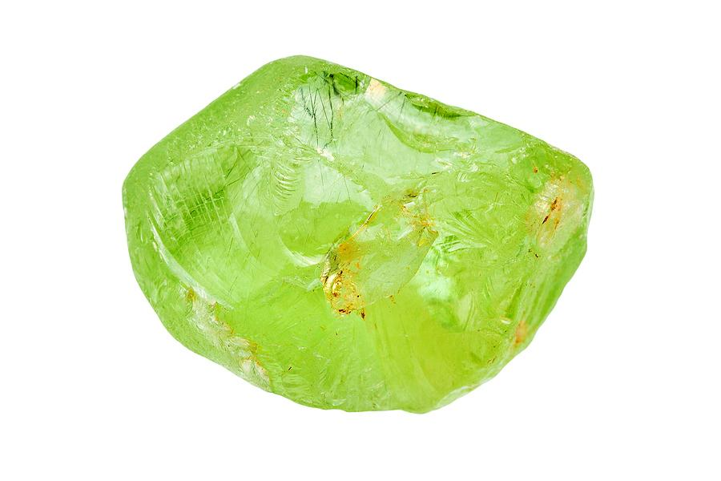

Peridot
Information
Places where peridot is found are Egypt and Tanzania. However, there are also sites in China, Myanmar, Vietnam, Pakistan and the United States.
Peridot, the bright green color of nature, is associated with harmony, good health, restful sleep, and peacefulness. Known as the stone of compassion, peridot calms anger by giving renewal to all things. When set in gold, this gem was said to protect the wearer from nightmares.
Health Benefits
You can find here some Healing Properties.
Outfits